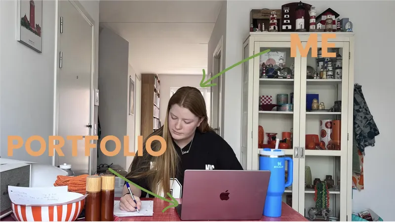
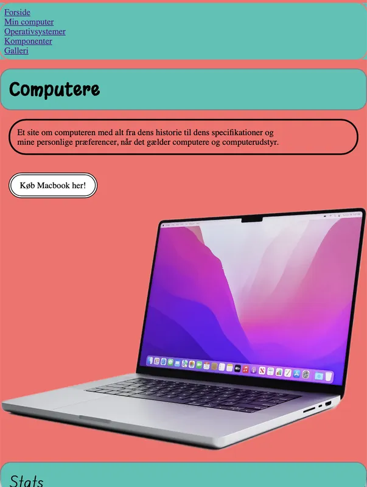
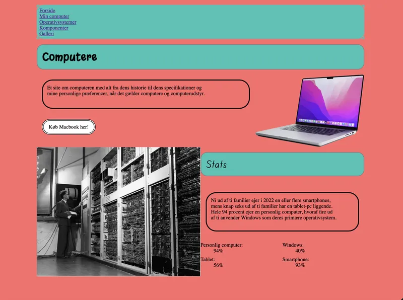
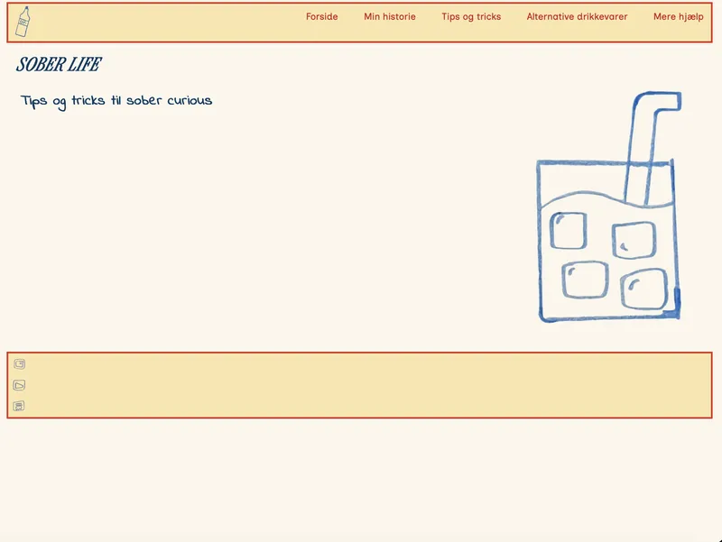
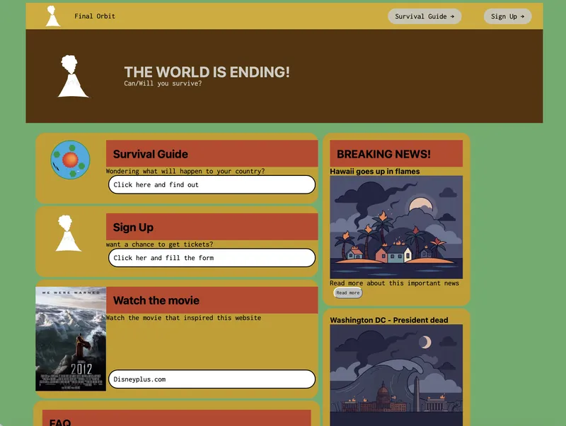
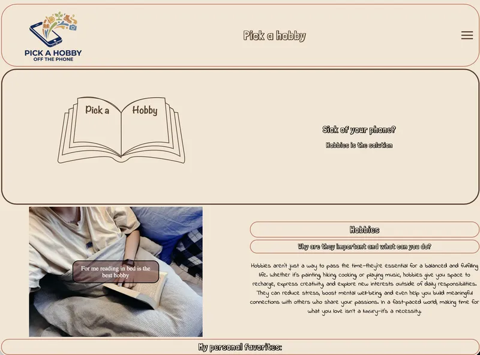
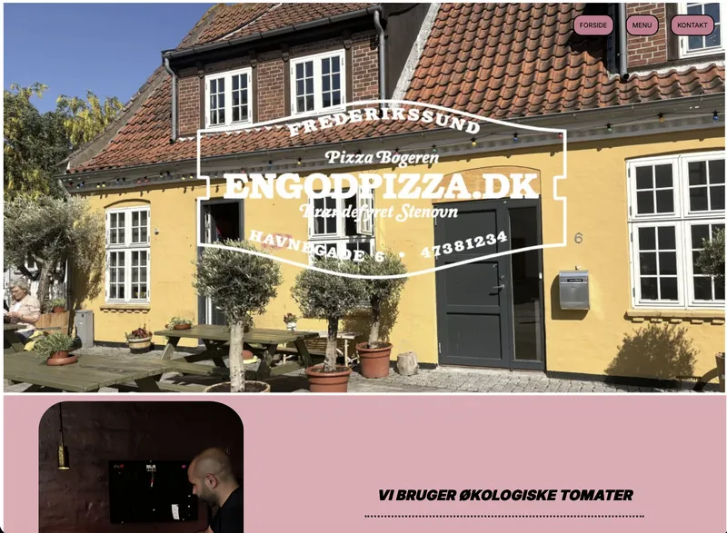

Min portfolio
Velkommen til min portfolio.
På denne side får du et indblik i mit første semester på multimediedesignuddannelsen. Her kan du læse om de forskellige temaer, jeg har arbejdet med, og udforske de projekter, jeg har udviklet gennem semesteret.
Portfolioen giver et
indtryk af både min faglige udvikling og mine personlige erfaringer under uddannelsen. Du vil kunne følge min læringsproces, se de udfordringer, jeg har mødt, og få indsigt i de kompetencer, jeg har opbygget inden for design,
indholdsproduktion og webudvikling. Jeg håber, at siden giver dig et godt indblik i min rejse gennem første semester og en forståelse af, hvordan jeg har udviklet mig som kommende multimediedesigner.
Klik på billederne nedenfor for at udforske mine projekter og lære mere om de erfaringer og færdigheder, jeg har opnået undervejs.
Mine projekter





